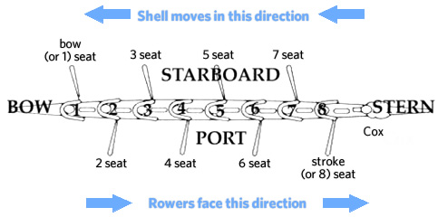
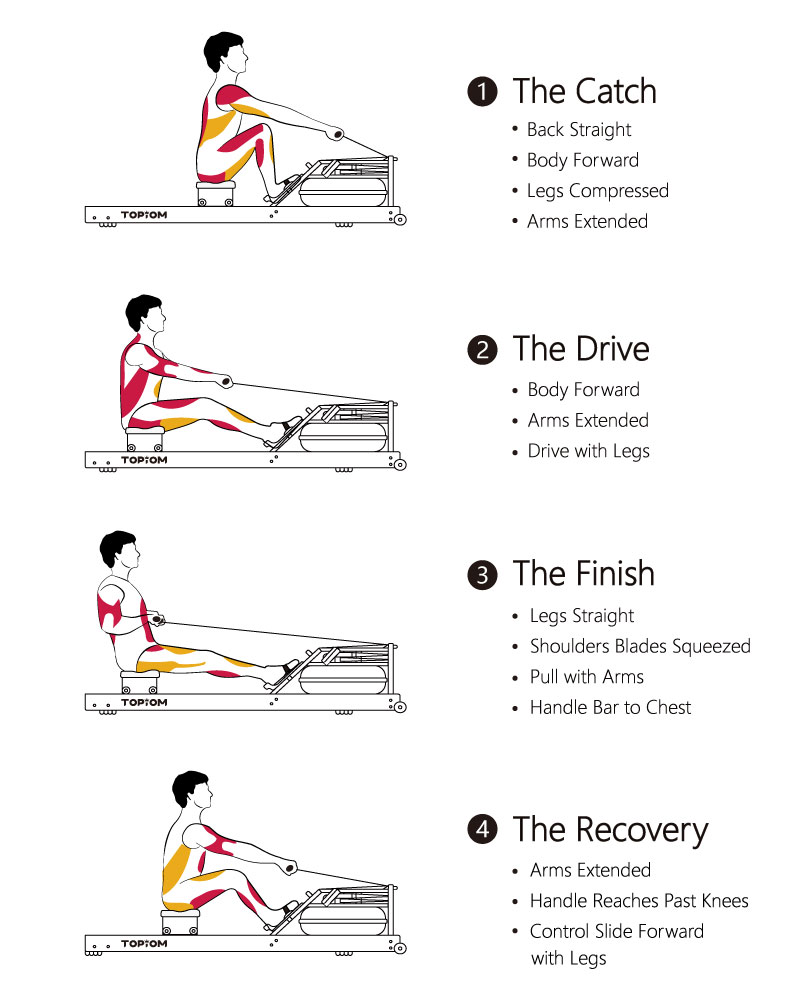

Here is some vocabulary that is helpful to know, remembering that rowers sit with their back towards the front of the boat.
There are many more vocabulary words/language that rowers should know, however, they are not necessarily important for a basic understanding of the sport.
Parts of a boat, specific to a sweeping 8x.
"The catch" is the beginning of the stroke, where your blades are squared and burried in the water. Your knees should be bent with your arms reaching out towards the stern, making sure to keep your posture in check. Next, quickly straighten your legs during "the drive." Pull your arms in towards your body, lean back to extend your stroke, and feather your blades during "the release." "The recovery" is an intergral part of the stroke where you allow for the boat to run under you; having a short recovery makes for a hard row and the boat go slower. Quickly push your arms away from your body and slowly bend your legs to return to "the catch." Make sure to match the person in front of you throughout the stroke, it keeps the boat travelling fast and looks neat. It helps to look at their back instead of their oars. However, if you are the stroke seat, make sure to keep a consistant ratio. If you are bow seat, look behind you every 3ish strokes and yell commands loudly!
A visual representation of how to take a rowing stroke.